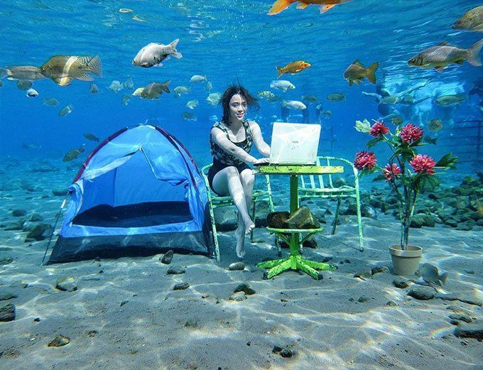

Umbul Ponggok
Umbul Ponggok adalah sebuah destinasi wisata air populer yang terletak di Desa Ponggok, Klaten, Jawa Tengah. Tempat ini merupakan mata air alami yang jernih, dihiasi oleh pemandangan bawah air yang indah, seperti bebatuan, ikan berwarna-warni, dan dekorasi unik untuk fotografi bawah air. Umbul Ponggok cocok untuk aktivitas snorkeling, menyelam, dan fotografi, sehingga menjadi daya tarik bagi wisatawan yang mencari pengalaman unik dan menyegarkan.
GO TO LOCATION